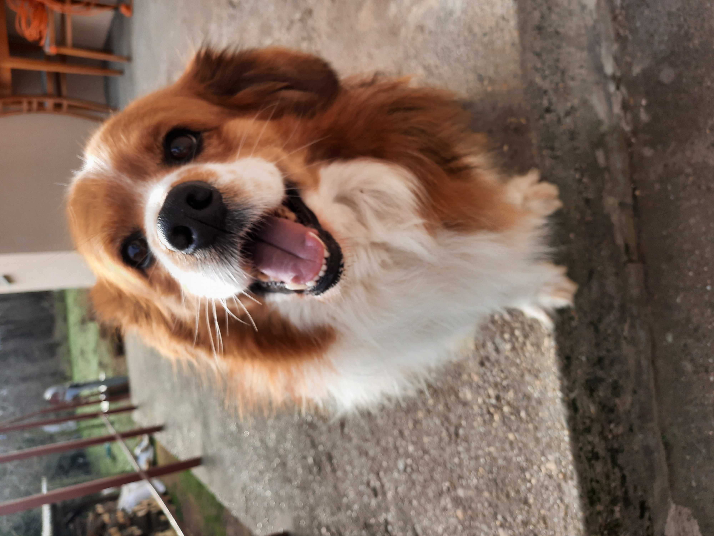

Tóth Drazsé
2012-ben született Vaskúton egy kertes háznál. Kiskorában semmiben se különbözött testvéreitől, azonban az idő teltével különlegessége formát öltött. Testvéreivel ellentétben, hosszú bundával és nagyobb marmagassággal rendelkezik.
Kiskorában tanítani próbáltuk, de a végeredmény csak egy elkényeztetett szőr gombócot eredményezett.

Édesanyja:
Mazsola:
Fura kinézetű viszont nagyon szeretetéhes kutyus 3 éve eltávozott. †
Édesapja:
Pluto:
Tőle örökölte külső vonások némelyikét. Pluto befogadott kutyus akit az út szélén találtak 10 évvel ezelőtt.
Testvér:
Picur, Tádé és Mütyür:
Mind a hárman természetben hasonlóak Drazséhoz, bár méretben kisebbek nála, ők ugyan ott laknak ahol az édesapjuk is.